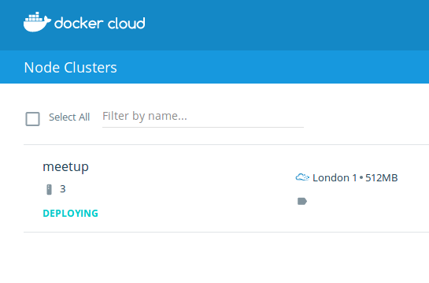

Live coded chat app in 45 minutes
This talk gives a concrete example of taking an Elixir application to production. In this live coding session I develop a simple chat application. It is then deployed to a fully meshed cluster of machines using Docker Cloud.
We touch upon several issues which are important for Elixir development today. Using Docker for local development as well production deployment. Managing configuration for multiple services. Testing and documenting APIs.
I gave this talk at the Elixir London meetup.